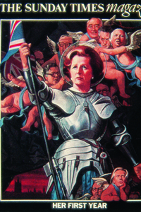

Lezione 20 La guerra fredda
La guerra fredda

-
200
610
-
180
230
-
145
432
-
175
475
-
200
580
-
140
550
-
145
402
-
AFGHANISTAN
L'invasione sovietica dell'Afghanistan, che ancora oggi è un campo di battaglia, viene respinta anche grazie all'importazione di armi americane dai guerriglieri afghani, che qui vediamo trionfanti al termine del conflitto.
WASHINGTON
L'ex attore Ronald Reagan alla presidenza degli Stati Uniti, in un'immagine dai toni patriottici e hollywoodiani. Il repubblicano Reagan diventa presidente degli Stati Uniti il 20 gennaio 1981.
Il suo primo mandato si caratterizza per una politica economica rigidamente liberista, mentre sul piano internazionale rilancia la corsa agli armamenti per combattere il comunismo, che definisce l' "impero del male".
Rieletto nel 1985, si dimostra conciliante con l'Unione Sovietica di Gorbaciov, di cui diventa amico personale, e pone le basi per il processo di distensione che porrà fine alla Guerra fredda.
LONDRA
Margaret Thatcher sulla copertina di un rotocalco inglese che ironizza sulla durezza delle politiche economiche e sociali del primo ministro conservatore.VATICANO
Il 16 ottobre 1978 in Vaticano viene eletto papa il polacco Karol Jòsef Wojtyla, che prende il nome di Giovanni Paolo II. E' il primo papa non italiano dopo 455 anni.
Il suo lunghissimo pontificato - morirà il 2 aprile 2005 - si caratterizza per una grande attenzione alle questioni internazionali. Per la sua vigorosa critica del comunismo, di cui aveva avuto esperienza diretta in patria, è considerato uno degli artefici del crollo dei sistemi di socialismo reale nell'Europa dell'est.AFGHANISTAN
Il 24 dicembre 1979 le truppe sovietiche invadono l'Afghanistan a sostegno del governo filocomunista che si era insediato l'anno precedente. Per dieci anni combattono una guerra durissima contro i partigiani musulmani appoggiati dagli Stati Uniti. Alla fine sono costrette a ritirarsi.
In Afghanistan è guerra civile fino al 1996, quando i talebani instaurano nel paese un rigido governo teocratico. Nel 2001 gli Stati Uniti accusano i talebani di sostenere il terrorismo islamico e invadono il paese, ma, come i sovietici prima di loro, si ritrovano invischiati in durissimi scontri con la guerriglia.MOSCA
Michail Gorbaciov diventa segretario generale del partito comunista sovietico l'11 marzo 1985. Con le parole d'ordine glasnost (trasparenza) e perestrojka (ristrutturazione) avvia nel paese una politica di riforme, mentre sul piano internazionale cerca un accordo con l'Occidente per il controllo degli armamenti e annuncia la fine del sistema degli stati satellite, lasciando ogni singolo governo dell'Europa orientale libero di decidere dei suoi affari interniLONDRA
Nel 1979, per la prima volta nella storia, una donna diventa primo ministro nel Regno Unito. E' Margaret Tatcher, leader del partito conservatore, che si conquista il soprannome di "lady di ferro" per la sua politica economica improntata ai principi del libero mercato e per il decisionismo in politica estera.
Dagli scontri con i potenti sindacati inglesi alla spedizione militare per riconquistare le isole Falkland rivendicate dalla giunta militare argentina, gli undici anni di governo della Tatcher segnano fortemente in senso conservatore il Regno Unito.